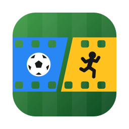

SocCutLast updated 9 November 2026
SocCut does not collect, transmit or store any personal data. It has no account, no analytics, no advertising and no network connection of any kind.
In short: your video files and your edits never leave your Mac. Nothing is uploaded, because the app contains no code that uploads anything.
SocCut is a video editor. You choose video files on your own Mac, mark up the match, and export a new video file to a location you choose. All of that happens locally, on your computer, using Apple's own media frameworks.
None. Specifically, SocCut does not collect:
The App Store version of SocCut makes no network connections. It runs inside Apple's app sandbox and is not granted the network entitlement, so it is incapable of connecting to the internet even if it were asked to.
There are none. SocCut contains no third-party SDKs, advertising libraries, analytics services or tracking of any sort. No data is shared with anyone, because no data is collected.
SocCut collects no data from anyone, including children under 13.
If this policy ever changes, the revised version will be published at this address with a new date at the top. Since the app collects nothing, any change is likely to be a clarification rather than a change in practice.
Questions about this policy or about the app can be sent to don.wan.stem@gmail.com.